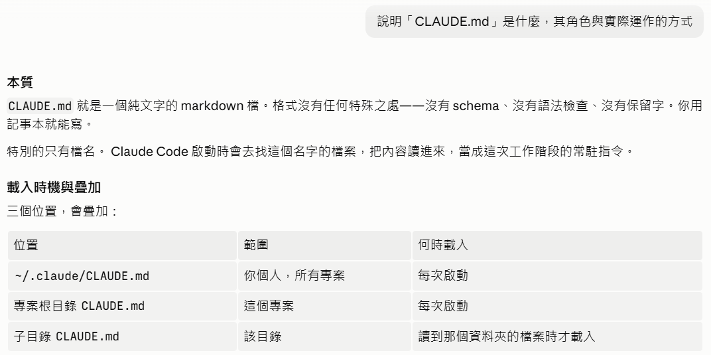
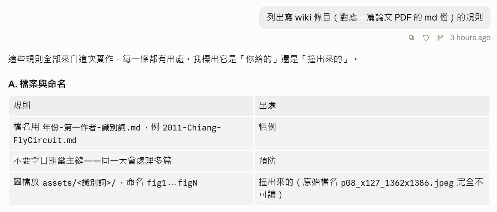
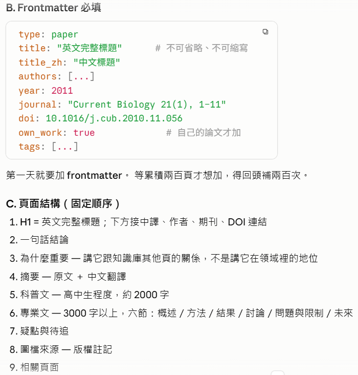
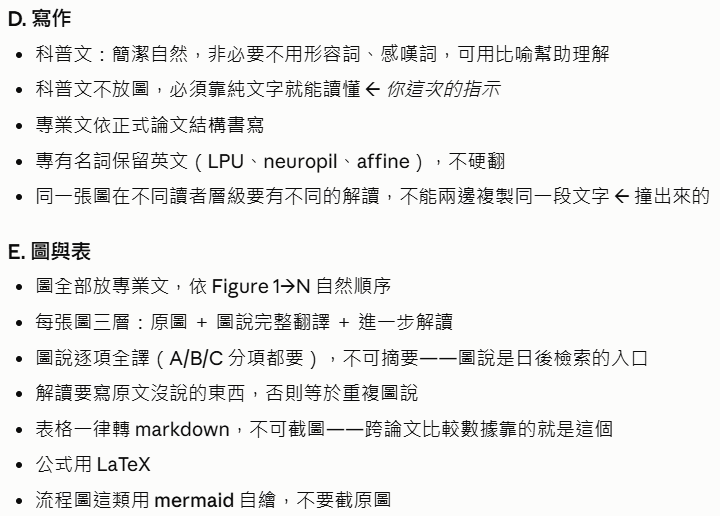
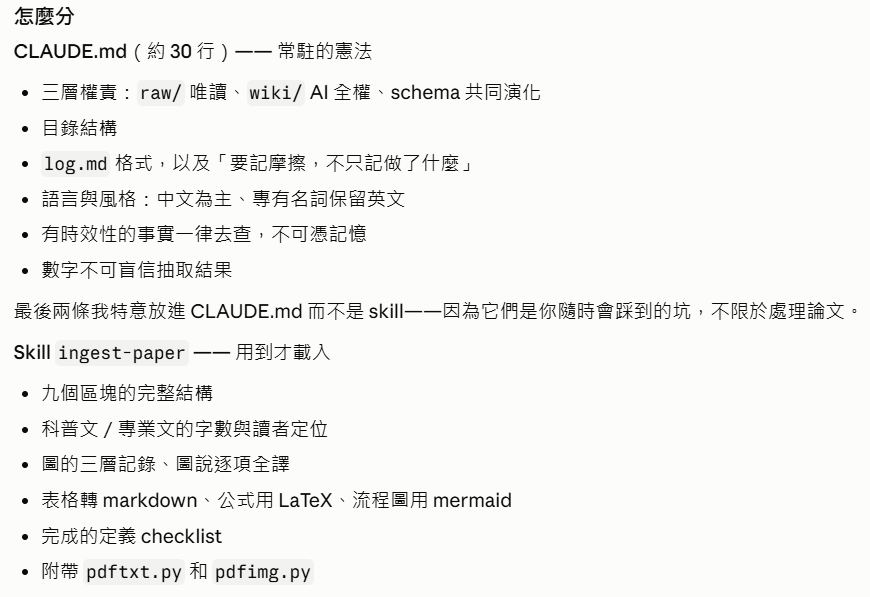
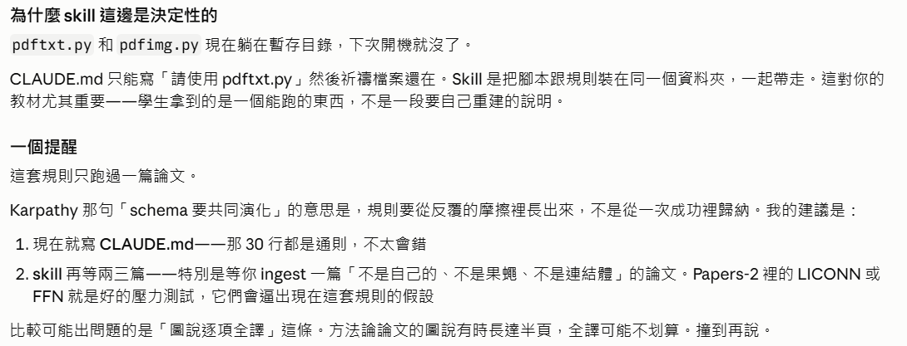
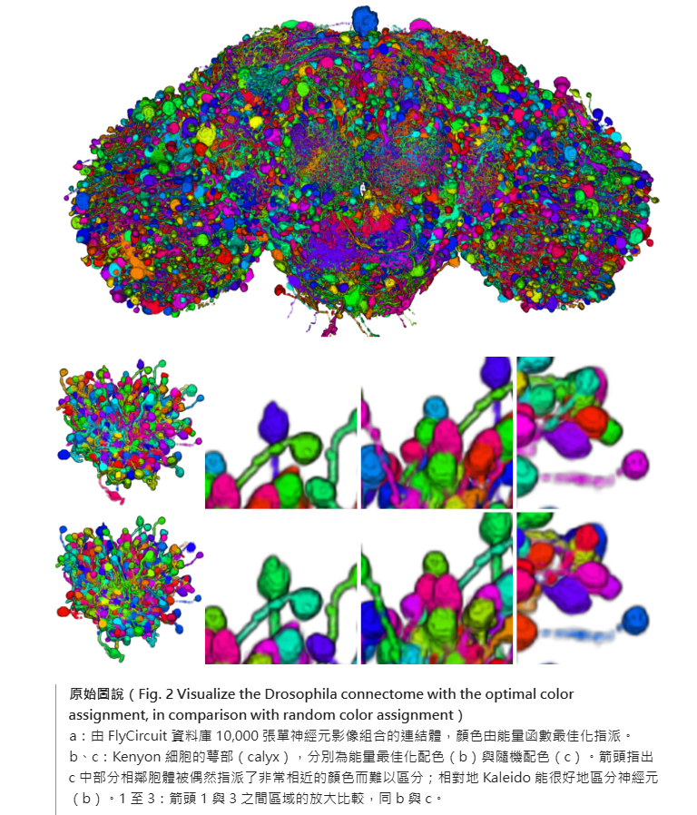
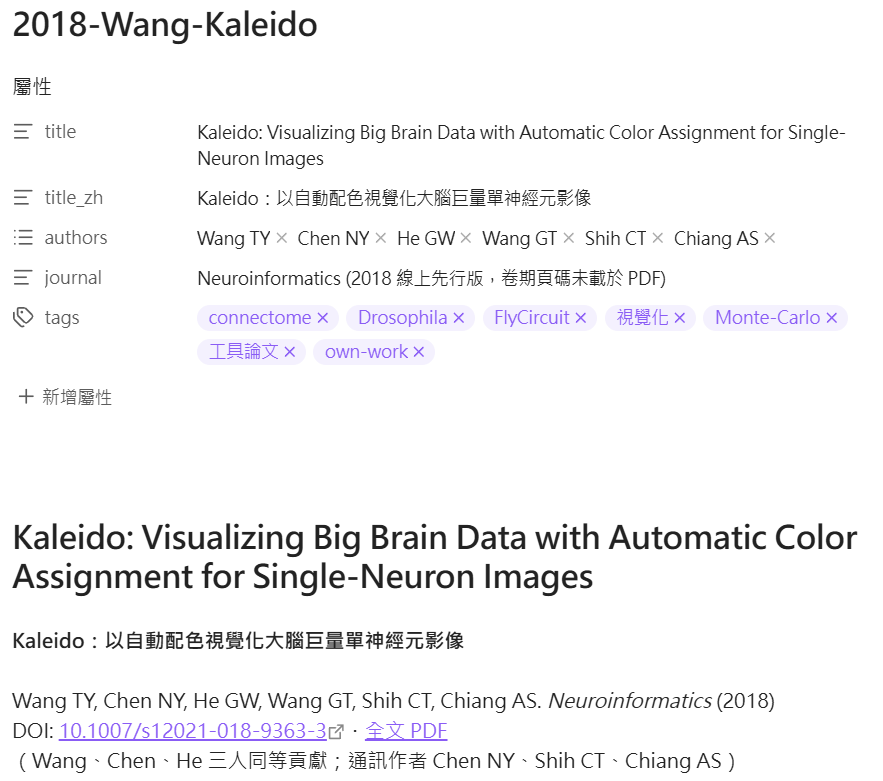
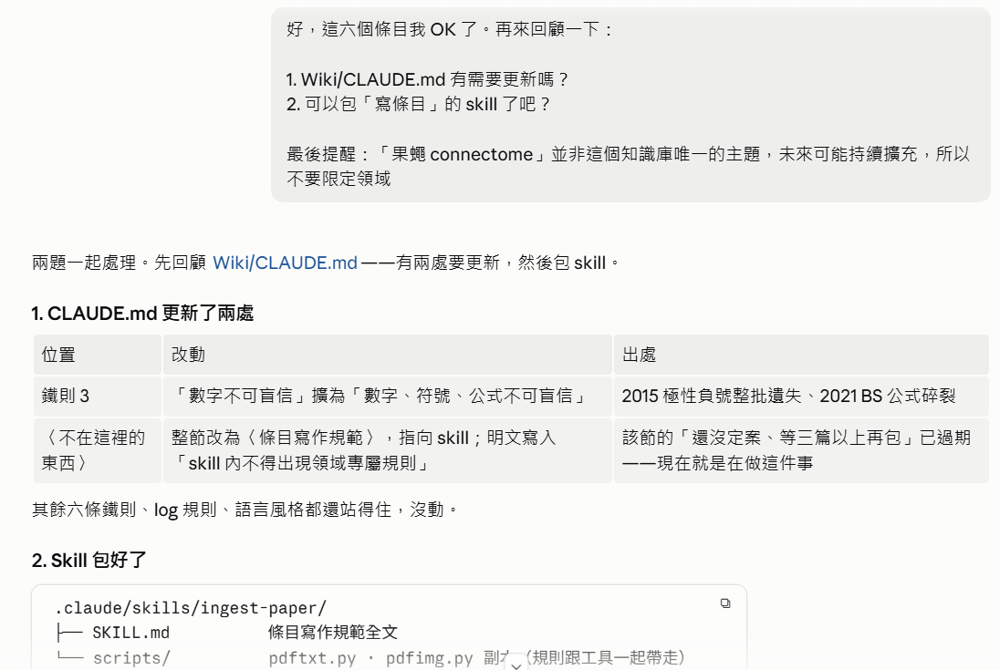
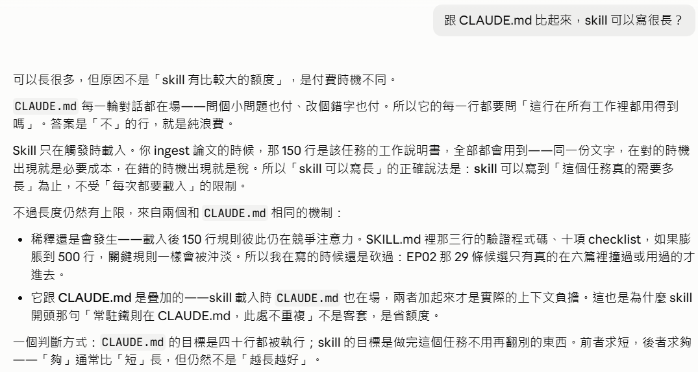

寫下第一份規則書
上一集動手建了知識庫，卻刻意沒寫規則書。這一集補上這件事：
CLAUDE.md 到底是什麼、怎麼從實作累積的摩擦裡把它做出來——
每一條規則都標出它從哪裡來。
 播放教學影片 · 10 分 07 秒 · 在 YouTube 開啟 ↗
播放教學影片 · 10 分 07 秒 · 在 YouTube 開啟 ↗
怎麼讀這一頁
CLAUDE.md 到底是什麼
說明「CLAUDE.md」是什麼，其角色與實際運作的方式
- 先講本質：一個純文字的 markdown 檔。沒有 schema、沒有語法檢查、沒有保留字， 用記事本就能寫。
- 指出唯一特別的地方是檔名——Claude Code 啟動時會去找這個名字的檔案， 把內容讀進來，當成這次工作階段的常駐指令。
- 列出三個放置位置與各自的載入時機，並說明它們會疊加：
全域
~/.claude/CLAUDE.md與專案根目錄的每次啟動都載入， 子目錄的則是讀到那個資料夾的檔案時才載入。

CLAUDE.md 實際上怎麼運作點此展開
它是 context，不是 code
這是最常被誤解的一點。CLAUDE.md 的內容不是被「執行」的，它是被貼進對話的——
技術上，那些文字會被放進送給模型的上下文裡，效果等同於你每次開場都手動貼一遍。
三個推論全部從這裡來：
- 它不是強制力。沒有任何機制會攔截違反規則的動作。鐵則寫「原始資料只能讀不能寫」， 那不是防寫保護，那是一句話。它的效力來自模型讀了之後決定遵守—— 所以規則要寫得具體、可檢查、有理由。模糊的規則不是弱約束，是沒有約束。
- 每一次請求都在收費。一份三百行的規則書，等於每一輪對話都先付三百行的稅—— 問一個小問題也付、改一個錯字也付。這才是「短的才有用」的真正理由，不是美學問題。
- 規則之間互相稀釋。上下文裡的注意力有限。二十條規則各自拿到的權重， 高於一百條裡的每一條。
中途修改不會立刻生效
規則書是在工作階段開始時讀進來的。你在對話中途改了它，已經載入的那份不會自動更新—— 當下這個對話看到的還是舊的。改完要生效，最可靠的做法是開一個新的工作階段。
它不是記憶
每次載入的都是同一份文字。它不會因為你上次糾正過什麼就自己長出新規則—— 要長，是你或 Agent 動手寫進去的。
上一集用過的比喻在這裡仍然成立：把 Agent 想成每天上工都失憶的員工。規則書是貼在牆上的規矩， 不是員工的記憶。牆上沒寫的，明天他就不知道。
換工具的對應檔名
同一個概念，不同檔名，內容邏輯完全相同：Claude Code 用 CLAUDE.md、
OpenAI Codex 用 AGENTS.md、Cursor 用 .cursorrules。
把規則攤開，每條標出處
列出寫 wiki 條目（對應一篇論文 PDF 的 md 檔）的規則
- 開場先定調：「這些規則全部來自這次實作，每一條都有出處。」
- 然後做了一件關鍵的事——替每一條規則加上出處欄， 標明它是「你給的」、「撞出來的」，還是「慣例」與「預防」。
- 第一組是「A. 檔案與命名」，三條規則各有不同來歷。
- 你給的來自使用者的明確指示。它成立，是因為你要求過。
- 撞出來的來自實作中的失敗。它成立，是因為不這樣做已經出過事。
- 慣例領域或工具的通行做法。沒有強制性，但照做省事。
- 預防推導出來的風險。還沒發生，但可預見。

p08_x127_1362x1386.jpeg 完全不可讀。Frontmatter 與頁面結構
這一步沒有新指令，是上一步的延續——同一份清單往下走。
- 列出「B. Frontmatter 必填」九個欄位，並在欄位旁註明限制：
title不可省略、不可縮寫；own_work只有自己的論文才加。 - 補上一條時間性的理由： 「第一天就要加 frontmatter。等累積兩百頁才想加，得回頭補兩百次。」
- 接著是「C. 頁面結構（固定順序）」，九項——從 H1 的英文完整標題， 到最後的相關頁面。
- 其中第 3 項附了說明：〈為什麼重要〉講的是它跟知識庫其他頁的關係， 不是它在領域裡的地位。

寫作、圖與表
- 「D. 寫作」五條，其中兩條特別標了出處—— 你給的科普文不放圖，必須靠純文字就能讀懂； 撞出來的同一張圖在不同讀者層級要有不同的解讀，不能兩邊複製同一段文字。
- 「E. 圖與表」七條，涵蓋圖的放置、圖說的翻譯、解讀的要求，以及表格、公式、流程圖的處理方式。
- 幾條規則把理由直接寫在規則裡： 「圖說逐項全譯，不可摘要——圖說是日後檢索的入口」、 「表格一律轉 markdown，不可截圖——跨論文比較數據靠的就是這個」。
- 對解讀的要求下得很重：「解讀要寫原文沒說的東西，否則等於重複圖說。」

關鍵一問：CLAUDE.md 還是 skill
規則列完了，一共二十幾條。下一個動作決定了整份文件的形狀。
你可以直接說「寫進 CLAUDE.md」——那是最自然的反應，這一集本來就是要寫規則書。 但這裡問的是另一個問題。
這應該寫 CLAUDE.md 還是寫 skill?
- 先給結論：「兩個都要，但切法是關鍵。」
- 然後把差異收斂到三項，並明說「決定性的差異只有一個」——載入時機。
- 另外兩項是能不能帶程式、以及給別人用的方式。
| CLAUDE.md | Skill | |
|---|---|---|
| 載入時機 | 每次啟動，一律載入 | 任務相符時才載入 |
| 能不能帶程式 | 不行，只能寫路徑 | 可以，腳本跟規則放在一起 |
| 給別人用 | 要對方複製貼上 | 整包安裝 |

精選三十行寫進 CLAUDE.md
- 把二十幾條規則依載入時機重新分配，分成兩堆。
CLAUDE.md（約 30 行）——常駐的憲法：三層權責、目錄結構、log.md格式與「要記摩擦，不只記做了什麼」、語言與風格、 有時效性的事實一律去查、數字不可盲信抽取結果。- Skill
ingest-paper——用到才載入：九個區塊的完整結構、 科普文與專業文的字數與讀者定位、圖的三層記錄與圖說逐項全譯、 表格轉 markdown 與公式用 LaTeX、完成的定義 checklist， 以及附帶pdftxt.py和pdfimg.py兩支腳本。 - 主動解釋了一個看似不一致的安排：
「最後兩條我特意放進
CLAUDE.md而不是 skill—— 因為它們是你隨時會踩到的坑，不限於處理論文。」

Skill 與 CLAUDE.md 的區別，以及為何不急著做
- 在 EP01 中，Agent 寫了
pdftxt.py和pdfimg.py這兩個工具程式放在暫存目錄裡，重開機會不見。 - 如果在
CLAUDE.md寫了「請使用pdftxt.py來幹嘛幹嘛……」， 由於暫存檔可能消失，就變成毫無用處的規則。 如果把這兩個程式也打包成 skill，就能確保以後還能重複使用。 - 建議：現在就寫
CLAUDE.md， 因為那 30 行都是通則，不太會錯；skill 等多寫幾篇論文條目、 規則更確定之後寫。

動手寫，並說出做不到的
分類決定之後才動手。這一步的畫面裡沒有新指令，只有執行與回報。
- 寫出
Wiki/CLAUDE.md，並且明說了下筆的依據： 「照我自己說的『短的才有用』，只放隨時適用的。」 - 順手處理了一件更根本的事——把專案分成兩半：
Wiki/是任務一（建知識庫）、Tutorial/是任務二（做教材）， 各自有自己的規則書。原本兩件事混在同一個資料夾， 才會導致「CLAUDE.md到底該寫哪一個」無法決定。 - 把散落的腳本歸位：
pdftxt.py、pdfimg.py、md2pdf.py收進Wiki/tools/，inline_img.py收進Tutorial/tools/。 這解決了上一步指出的「下次開機就沒了」。 - 一共動了 136 行（
Created 2 files, edited a file, ran a command）。 - 主動回報一步做不到：EP01 的資料夾搬不進
Tutorial/， 需要人操作。原因是它正是當前工作階段的所在目錄，被行程鎖住， Windows 不允許移動——這是環境限制，不是能力問題。

← 還沒搬進 Tutorial/ 是它自己標的。這一步歸位的程式
- Wiki/tools/
pdftxt.py（PDF 轉 UTF-8 文字）·pdfimg.py（抽內嵌圖片）·md2pdf.py（markdown 轉 PDF 快照）- Tutorial/tools/
inline_img.py（把圖片轉 base64 內嵌成單檔網頁）
驗收：把鐵則列出來
把 Wiki/CLAUDE.md 的鐵則列出來
- 列出六條鐵則，並且先交代前言限定的範圍： 「這幾條任何時候都適用，不限於處理論文」—— 那句限定就是第 06 步分類判準留下的痕跡。
- 每一條都保留了它的來歷。第 3 條直接把失敗現場寫進規則裡：
「實際發生過
±被抽成6、µm被抽成mm」。

用五篇論文壓力測試規則
規則書寫好了，但它只被一篇論文驗證過。接下來的指令，是要讓規則接受考驗。
現在我們有 Wiki/CLAUDE.md 和 Wiki/tools/ 裡面的工具，以及寫第一篇論文條目的經驗。接下來，請你把 Papers 裡面的另外 5 篇論文條目寫出來，讓寫作規則更確定
- 第一句話就把任務定性：「這就是壓力測試——五篇跑完，規則哪裡撐不住就會現形。」
然後宣告工作方式：一次吸收一篇、全程照
CLAUDE.md走、摩擦記進 log。 - 先列
Papers/看實際有什麼，並讀了兩支工具程式的原始碼——確認手上的工具能做什麼，再開工。 - 建任務清單，然後一次把五篇的文字全部抽出來（一個指令、八個工具呼叫）， 而不是抽一篇寫一篇。
- 從 2015 那篇開始，抽出五張圖之後，照規則逐張打開確認內容再命名——不靠頁碼猜。

發現漏了圖的 panel 標記
五篇條目交出來之後，你打開 Obsidian 逐篇看。看到 Kaleido 那篇的 Fig 2 時，發現一件事：

你放截圖的時候有時把圖的 panel 標記給漏了，例如 2018 Kaleido 那篇，Fig.2, 3 的各子圖沒有 A, B, C...等編號，這樣在閱讀圖說時會搞不清楚是哪個，整體檢查一次並修正
- 先診斷原因，一句話講清楚：panel 字母常在 PDF 的文字層，點陣圖層抽不到——
所以
pdfimg.py抽出來的圖天生就少了這些字。 - 沒有只修你點名的兩張，而是寫了一支檢查腳本掃全部六篇、31 張圖： 對每張圖偵測「圖的範圍內、文字層裡有沒有獨立的 A–H 字母」，有就代表點陣抽取必缺。
- 腳本第一版排序有問題（同一頁兩張圖時要按位置取，不是按面積），修了再跑。
- 對缺字母的圖改用頁面渲染重建——把圖區連同旁邊的文字層一起「拍」下來， 字母、圖例都會在。Fig 3 第一次重建裁到左緣的圖例，擴大範圍再渲染一次。
- 結果分三類：三張要修（2018 的 Fig 2、3、4）、二十幾張本來就好（字母烙在圖裡）、 還有三張是論文自己沒印字母（2024 那篇的 Fig 2、4、5，圖說引用了 (A)–(F)，圖面上根本沒有）。 最後一類不修圖，在解讀裡明說落差、給欄序對應。

Created check_panels.py +77——一支 77 行的檢查工具。
它的存在意義是把「你看到一張有問題」變成「全庫每一張都查過」。這一步動用的程式
- 自己寫check_panels.py
- 掃描每篇論文的每張圖，比對圖區內的 PDF 文字層有無獨立 panel 字母；有缺的以頁面渲染重建候選圖。

檔頭太長，加上本機 PDF 連結
再補一個之前漏掉的規則：在檔頭的部分要有本機的 PDF 連結（知識庫為本機自用而不上網，不會有著作權問題）。還有我覺得檔頭太長了，改一下： 1. 把「type」拿掉（因為這裡都是 paper所以不需要） 2. 「year」、「journal」、「doi」合併：格式 Current Biology 21(1), 1–11 (2011). doi: 10.1016/j.cub.2010.11.056 <本機全文 PDF 檔連結> 3. 「own_work」變成一個 tag，不要獨佔一欄
- 三項一起改，六個條目全套用（
Edited 7 files——六篇加 log）。檔頭從九欄縮到五欄。 - PDF 連結用
file:///絕對路徑，路徑裡的空格轉成%20。 - 但這一版沒有活過下一輪。你在 Obsidian 裡一看：doi 和 PDF 都不是超連結，點不動。
- Agent 查出原因：Obsidian 的屬性面板只在「整個值是一條網址」時才渲染成可點連結，
混在文字裡的網址全變死字；而且
doi: 10.x本身不是網址，要https://doi.org/開頭才行。 - 第二版：doi 和 pdf 各自獨立一欄——可以點了，但檔頭又變長。
- 第三版（定案）：檔頭回到五欄，連結移到內文的標題區—— 「DOI: 10.xxx・全文 PDF」一行，內文的 markdown 連結不受屬性面板限制，可以自訂顯示文字。
- 最後一關：
file:///對 Obsidian 是外部連結，點了跳安全確認、交給系統程式開； 你要的是在 Obsidian 頁面內開。這需要 PDF 在 vault 裡面——於是把Papers/複製一份進Wiki/papers/，連結改成內部連結，點了直接在分頁裡用內建檢視器開。

journal 一欄塞了期刊、doi、PDF 路徑三樣東西。
看起來精簡，實際上點不開——下一輪就被推翻。
回顧規則書，決定包 skill
好，這六個條目我 OK 了。再來回顧一下： 1. Wiki/CLAUDE.md 有需要更新嗎？ 2. 可以包「寫條目」的 skill 了吧？ 最後提醒：「果蠅 connectome」並非這個知識庫唯一的主題，未來可能持續擴充，所以不要限定領域
- 回顧
CLAUDE.md，只更新兩處，而且每一處都附出處：- 鐵則 3 從「數字不可盲信」擴為「數字、符號、公式不可盲信」——出處是這五篇裡實際發生的： 2015 那篇抽出來的極性數值負號整批遺失、2021 那篇的公式碎裂成散片。
- 〈不在這裡的東西〉那一節整節改掉，改為指向 skill——因為它寫的「還沒定案、等三篇以上再包」已經過期， 現在就是在做這件事。
- 其餘六條鐵則、log 規則、語言風格都還站得住，沒動。
- 把條目寫作規範包成 skill：
.claude/skills/ingest-paper/， 內含SKILL.md（規範全文）和scripts/（兩支工具程式的副本——規則跟工具一起帶走）。 - 照你的提醒做了兩層保險：skill 全文沒有任何果蠅或連結體專屬的規則（連舉例都用通用寫法）；
CLAUDE.md裡也明文寫下「skill 內不得出現領域專屬規則」，未來修 skill 的人會看到。 - 主動加了一段誠實的註記：原本訂的包裝條件是「三篇以上、且至少一篇非連結體領域」——後半沒滿足， 六篇全在同一個生態圈。你裁定現在包，所以下一批論文的第一篇就是這個 skill 的壓力測試。

親自確認 skill 的內容
我要確認這個 skill 的內容
- 把 150 行的
SKILL.md全文攤出來，然後給一張七節結構表—— 每一節寫了什麼、規則來源是哪一步：檔名與 frontmatter 來自「這兩天的三版迭代」、 標題區來自「今天的連結攻防」、固定結構來自「六篇全數驗證」…… - 列出四個它自己做的判斷、你可以否決的點：字數要不要寫死、 「原刊圖面缺陷不修圖只明說」這條要不要當正式規則、觸發詞寬窄、scripts 副本與 tools 並存的漂移風險。

SKILL.md 全文（150 行）點此展開
---
name: ingest-paper
description: 把一篇論文 PDF 吸收成知識庫條目（領域不限）。當使用者要求 ingest 論文、寫論文條目、處理新進 PDF 時使用。涵蓋條目結構、圖的三層記錄、批判層寫作、完成定義與收尾動作。
---
# 論文條目寫作
把一篇論文 PDF 寫成知識庫的完整條目。**領域不限**——本規範不得依賴任何特定學門的慣例。
常駐鐵則（原始資料唯讀、數字符號核對、推測標示等）在 `Wiki/CLAUDE.md`，此處不重複。
## 流程總覽
```
抽全文 → 通讀 → 抽圖 → 逐張開圖驗證 → 寫條目 → 收尾（PDF 副本、index、log）
```
## 工具
在 `Wiki/` 下執行（需 `pip install pymupdf`）：
```bash
python tools/pdftxt.py <輸入.pdf> <輸出.txt> # 全文轉 UTF-8，繞過 Windows cp950
python tools/pdfimg.py <輸入.pdf> <輸出目錄> [最大頁碼] [最小邊長px] # 抽內嵌圖
```
新環境沒有這兩支時，本 skill 的 `scripts/` 內附副本。
## 一、檔名與 frontmatter
- 檔名：`年份-第一作者-識別詞.md`（識別詞＝工具名、資料庫名或主題短詞，英數）
- 圖檔目錄：`assets/<第一作者小寫><年份>/`，圖命名 `fig1`…`figN` 依自然順序
- frontmatter **固定五欄**，不多不少：
```yaml
---
title: "英文完整標題" # 不可省略、不可縮寫
title_zh: "中文標題"
authors: [姓 名縮寫, …] # 全列，不用 et al.
journal: "期刊 卷(期), 頁 (年)" # 線上先行版等特例括號註明
tags: [主題詞…, own-work] # 自己的論文加 own-work；不設 type/year/doi/pdf 欄
---
```
## 二、標題區
```markdown
# 英文完整標題
**中文標題**
第一作者, 次要作者, et al. *期刊* 卷(期), 頁 (年)
DOI: [10.xxx/…](https://doi.org/10.xxx/…)・[[papers/<原始檔名>.pdf|全文 PDF]]
（同等貢獻、通訊作者、開放授權等資訊，一行括號）
```
- **先把 PDF 從正本資料夾複製到 `Wiki/papers/`**——內部連結才能在 Obsidian 頁面內開啟。
正本永遠以原始資料夾為準（見鐵則 1）
- DOI 用完整 `https://doi.org/` 網址才可點
## 三、固定結構（順序不變）
```
一句話結論 → 為什麼重要 → 摘要（原文＋中文翻譯）→ 科普文 → 專業文
→ 疑點與待追 → 圖檔來源 → 相關頁面
```
| 區塊 | 要求 |
|---|---|
| 一句話結論 | **必須帶關鍵數字**，一段話講完論文做了什麼、得到什麼 |
| 為什麼重要 | 講它**跟知識庫其他頁的關係**（在哪條研究線、影響哪些條目），不是它在領域裡的地位——後者摘要就有 |
| 摘要 | 原文**完整照登不節錄**，翻譯與原文分節並列 |
| 科普文 | 約 2,000–2,500 字，高中生程度，**不放圖**（純文字就能讀懂），少形容詞，可用比喻 |
| 專業文 | 3,000 字以上，六節固定：概述（主要問題／發表時的領域現狀／重要性）、方法、結果、討論、問題與限制、未來 |
| 疑點與待追 | 每條**可行動**（寫明回查什麼、問什麼），指向未來會讀的東西 |
| 圖檔來源 | 版權聲明必寫（出版社與授權條款；CC-BY 者註明標註義務） |
| 相關頁面 | 集中列出全部 `[[連結]]`；連到還不存在的頁面是正常的（待寫標記） |
- 科普文與專業文**不可互相複製段落**——同一件事對不同讀者要分別寫
- 工具／方法類論文的「結果」一節映射為「演算法＋示範案例＋定量驗證」，六節標題不變
## 四、圖
**圖全部放專業文**，每張三層記錄：
```markdown

> **原始圖說（Figure N. 英文標題）**
> 逐 panel 完整翻譯——(A)…(B)…不可摘要，圖說是日後檢索的入口。
>
> **解讀**：寫原文沒說的東西（重要性排序、閱讀陷阱、證據等級、
> 這份資料保證不到的範圍）。複述圖說等於沒寫。
```
抽圖後的**強制驗證**（三個實際踩過的坑）：
1. **逐張開圖確認內容與圖號對應**，不可用頁碼推測
2. **與原 PDF 頁面比對完整性**——示意板、箭頭標註常是向量層，`pdfimg.py` 抽不到；
panel 字母（A、B、C…）與圖例常在文字層，點陣圖也沒有。
快篩法：檢查圖 bbox 範圍內的 PDF 文字層有無獨立的 A–H 字母，有＝點陣必缺
3. 缺板缺字母時**改用頁面渲染**重建：
```python
import pymupdf
doc = pymupdf.open(pdf); page = doc[頁碼]
bbox = pymupdf.Rect(page.get_image_info()[k]["bbox"]) # 同頁多圖依 y 座標分辨
clip = pymupdf.Rect(bbox)
for w in page.get_text("words"): # 併入圖區的文字層元素
r = pymupdf.Rect(w[:4])
if r.intersects(bbox + (-60, -16, 16, 6)) and r.height < 20:
clip |= r
pix = page.get_pixmap(matrix=pymupdf.Matrix(3, 3), clip=clip)
pix.save("figN.png") # 注意排除頁首頁尾與圖說欄，渲染後再開圖確認一次
```
4. **原刊圖面自身的缺陷**（圖說引用了 panel 字母但圖上沒印）：不修圖，
在解讀開頭明說落差並給對應方式（例：左起第 1 欄＝(A)）
- 表格一律轉 markdown 不可截圖（跨論文比數據靠它）；公式用 LaTeX；
流程示意圖用 mermaid 自繪，不抽原圖
## 五、數字與公式
- 誤差與樣本數**連著記**：`93% ± 2%（n=33）`——沒有 n 與 ± 的百分比不可單獨引用
- **口徑跟著數字走**：同一件事有多個數字時（不同定義、不同分母、摘要與正文不一致），
標明各自口徑，不可混用；分母是外插值時要說
- 帶符號數值（負號、±）與公式抽取後逐符號對照原文——文字層會整批吃掉負號、打散公式
## 六、批判層（條目價值高於原文的地方）
- 〈問題與限制〉分三類：**方法內在／取樣與統計／定義與內部一致性**
- **必須有作者沒說的批評**——只複述論文自承的 limitations 等於沒寫
- 原文**內部矛盾**用 ⚠️ 標記：寫明矛盾內容、回查位置，並規定引用該數字時一併標註疑點
- 每張圖的解讀標出**這份資料保證不到的範圍**
- 跨論文警覺（讀同一研究線多篇時）：
- **計數漂移**——同一物件在不同論文的數量、單位悄悄改變，逐一對照並記入疑點
- **假說硬化**——前作的 putative／推測，被後作直接當事實或分類名使用
- 發表文獻本身也會錯（錯引、圖號錯、圖面缺標記）——發現就記，不憑「已發表」放行
## 七、完成定義（checklist）
- [ ] PDF 已複製至 `Wiki/papers/`，標題區「全文 PDF」內部連結可開
- [ ] frontmatter 五欄、檔名合慣例
- [ ] 八個區塊齊全且順序正確
- [ ] 摘要原文完整＋翻譯
- [ ] 每張主圖三層記錄；逐張開圖驗證過對應與完整性
- [ ] 數字帶誤差／樣本數／口徑；符號公式已對照原文
- [ ] 有作者沒說的批評；內部矛盾已標 ⚠️
- [ ] `[[連結]]` 已建（含待寫頁面）；相關頁面一節齊全
- [ ] `index.md` 新增一列（頁面、一句話、圖數）
- [ ] `log.md` 追加一筆——**記摩擦**（卡在哪、放棄什麼、規則候選），不只記做了什麼
如何觸發 Skill
Skill 包好、內容確認過之後，接下來要知道怎麼用它。這一步沒有截圖，直接說明。
觸發 skill 有兩種方式，兩條路都通：
| 方式 | 怎麼做 | 性質 |
|---|---|---|
| 指令 | 在輸入框打 /ingest-paper，後面可以接目標，例如
/ingest-paper Papers-2/LICONN.pdf |
強制載入——不管你怎麼描述任務，這份規範一定進來 |
| 自然語言 | 直接說「ingest 這篇論文」「把這個 PDF 寫成條目」「處理新進的論文」 | 自動匹配——Agent 比對 skill 的 description，判斷任務相符就自己載入 |
自然語言之所以能觸發，是因為 SKILL.md 開頭的 frontmatter 有一欄 description——
它寫的就是「什麼情況下該用這個 skill」。Agent 看到任務跟描述對得上，就會載入。
所以那一欄不是註解，是觸發條件；寫得太窄會漏觸發、太寬會誤觸發。
兩個實務上要知道的事：
- 生效範圍：skill 放在專案根的
.claude/skills/，工作目錄在這個專案（或其子資料夾） 的工作階段都能用。 - 生效時機：skill 清單通常在工作階段啟動時載入，剛建好的 skill 可能要開新的工作階段才會出現——
跟第 01 步講的「
CLAUDE.md中途改了不會立刻生效」是同一件事。
Skill 可以寫多長
最後一個問題，把這一集的主線收攏起來——規則書要短，那 skill 呢？
跟 CLAUDE.md 比起來，skill 可以寫很長？
- 先修正問題的前提：可以長很多，但原因不是「skill 有比較大的額度」，是付費時機不同。
CLAUDE.md每一輪對話都在場——問個小問題也付、改個錯字也付，所以每一行都要問 「這行在所有工作裡都用得到嗎」。- Skill 只在觸發時載入。你 ingest 論文的時候，那 150 行是該任務的工作說明書，全部會用到—— 同一份文字，在對的時機出現是必要成本，在錯的時機出現就是稅。
- 但長度仍有上限，來自兩個和
CLAUDE.md相同的機制：稀釋還是會發生（150 行膨脹到 500 行，關鍵規則一樣被沖淡）； 而且 skill 載入時CLAUDE.md也在場，兩者是疊加的。 - 給一個判斷方式：
CLAUDE.md的目標是四十行都被執行； skill 的目標是做完這個任務不用再翻別的東西。前者求短，後者求夠——「夠」通常比「短」長，但不是越長越好。

這一集學到什麼
上一集留下的結論是「規則要從摩擦裡長出來」。這一集回答的是接下來那個更難的問題： 摩擦已經累積了，然後呢？
答案不是「全部寫下來」。是先問每一條從哪裡來，再問它什麼時候會被用到。
關於寫規則的三個觀察
- 每條規則都要有出處你給的、撞出來的、慣例、預防。填不出出處的規則， 就是上一集被「作廢」推翻的那一種——看起來專業，實際上建立在推測上。
- 分類看載入時機，不看重要性常駐的進
CLAUDE.md， 任務專屬的打包成 skill。用「重不重要」來分會得到完全相反的答案。 - 節制不是什麼都不寫已經驗證過的通則現在就寫；只跑過一次的等累積。 同一份材料，不同的證據厚度，該有不同的處置。
關於你的角色
這一集你做的事有四件：把名詞問清楚、要求列出規則、 問了那個分類問題、驗收。
規則是 Agent 歸納的，出處是它標的，分類判準也是它提的。但「這應該寫 CLAUDE.md 還是寫 skill」這一問是你問的——而那一問決定了整份文件的形狀。
上一集最關鍵的動作是否決，這一集是提問。 兩者的共同點是：都發生在 Agent 大量產出之前。
這一集的產出
| 項目 | 狀態 | 內容 |
|---|---|---|
| Wiki/CLAUDE.md | 新增 | 常駐規則，含六條鐵則 |
| Wiki/index.md | 新增 | 知識庫目錄 |
| Wiki/tools/ | 歸位 | pdftxt.py · pdfimg.py · md2pdf.py |
| Tutorial/tools/ | 歸位 | inline_img.py |
| skill ingest-paper | 已包裝 | SKILL.md ＋ 兩支工具程式副本；領域中立，待不同領域的論文檢驗 |
檢驗一下
十題單選，答完每一題立刻告訴你對錯與理由。答錯不扣分， 重點是看懂為什麼。